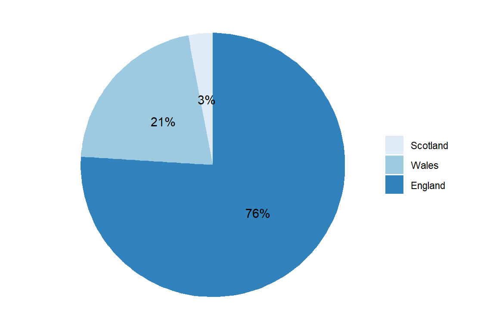
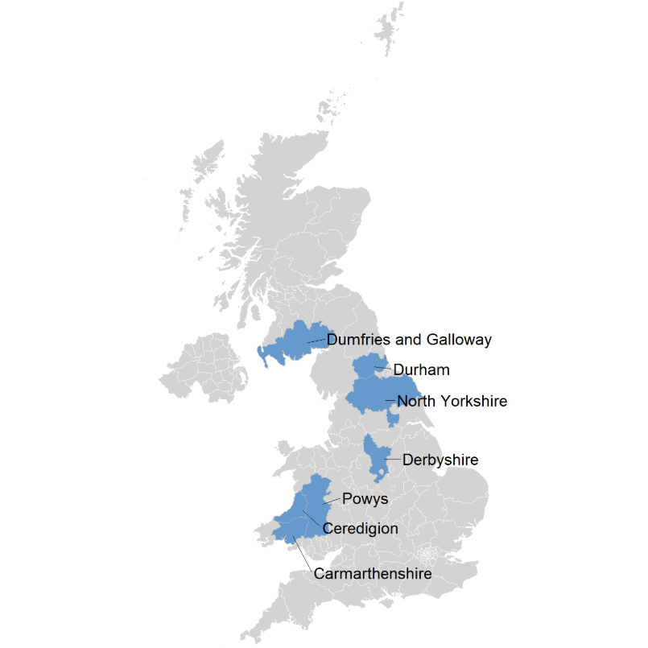

1 Introduction
1.1 Background
Willow Tits are in a singular position of holding the dual-status as being the most recently “discovered” resident bird species in the UK, but also the one most rapidly declining. The species was only recognised in 1897, when it was finally distinguished from the Marsh Tit, and subsequently added to the British List of resident birds in 1900 (Cocker and Mabey 2005). However, it is also the fastest declining resident bird in the UK (Burns and Wotton 2020) its population falling by 86% between 1995-2020 with a greater decline estimated between 88-94% since the 1970s (Lewis and Smith 2009). Since 2002, the Willow Tit has been on the Red List as the highest level of conservation concern.
Many efforts have been undertaken by charities and volunteers to increase the knowledge and understanding of Willow Tit and aid in their conservation. It is my hope that this project can be a part of this wider effort.
1.1.1 Current status and research
Throughout 2019-2021, a national survey was undertaken, organised by the RSPB with support from the Rare Breeding Birds Panel, Natural England, Natural Resources Wales, and the Welsh Ornithological Society. The Results from this national willow tit survey estimated the population at 5,700 breeding pairs with England holding 76% of the population:
Raw data from the survey were not made publicly available, but it was reported by the RSPB that Willow Tit populations were highest in the following counties:
England: North Yorkshire, Durham, and Derbyshire
Wales: Carmarthenshire, Ceredigion, and Breconshire and Montgomeryshire (here shown as the county Powys)
Scotland: Dumfries & Galloway

1.2 The Data
The dataset for this project was taken from eBird, a citizen-science database containing observation data submitted by volunteers. These data record birding events in the form of checklists containing a list of species observed and the number of individuals for each species. Checklists also record the location, date, time, and distance for each event.
1.2.1 Why eBird data
Much has already been written on the robust nature of eBird data for ecological analysis Strimas-Mackey2020, but the single most important aspect of using eBird data for this project is that it is freely available.
Previous research, including the national survey, also used citizen-science data collected by volunteers and submitted through recording systems such as Birdtrack. However, these data are held by the BTO and are not publically available. Therefore, opportunities to make use of this data are limited. Since eBird is a freely available dataset, this makes it a unique and vaulable source of data on Willow Tits.
1.2.2 A note on eBird data
eBird data are released as two tab-separated text files (.txt) called the eBird Basic Dataset (EBD) and the Sampling Event Data (SED). These two datasets are released monthly and contain all validated bird sightings in the eBird database at the time of release. Both of the datasets can be downloaded in full or for a specific species, region, and time period using the Custom Download.
The two datasets included in the download are:
eBird Basic Dataset (EBD): Observation data. In this dataset, each row represents a sighting of a single species including count and other species-level information:
Example of the eBird observation data
Sampling Event Data (SED): Checklist data. Each row corresponds to a checklist (birding event) including date, time, location, and effort:
Example of the eBird checklist data
Three key aspects make eBird checklist data useful for anaysis. The first is the field protocol type where observers specify whether they were “traveling”, “stationary”, or if the event was “incidental” (birding was not their primary activity). This enables a distinction between checklists that cover an area, checklists recorded from a single point, and where birding was the main purpose and those where the observer noticed a specific bird. Second, for checklists with the protocol type “travelling”, the distance and speed are recorded so it is possible to gain a picture of the area covered. And third, the field all species reported allows observers to indicate if all species were recorded, that is, if the checklist is a complete record of species during a birding event. Complete checklists enable the inference of zero-counts for species not reported.
1.2.3 BTO Breeding Bird Survey data
As of December 3, 2024, the BTO released a publically available dataset from their Breeding Bird Survey (Ornithology 2024). This data cover a thirty-year period (1994-2023) and contain the data collected during the Breeding Bird Survey (BBS) of the United Kingdom. BBS data are collected twice a year during the breeding season for all species that breed in the UK.
The release of these data is exciting as, until now, access has been limited thereby restricting analysis to only authorised individuals. It will be important to include these data in the overall project, not least as a benchmark corroborating the validity of eBird data even if collected through a different methodology. They have, therefore, been included as a separate section set alongside the original study.